python-game
[Toc]
小组成员
PB20111696 王琛
PB20111697 王骥扬
PB20111699 吴骏东
项目摘要
本项目借鉴Free Python Games使用turtle构建游戏界面，使用开源open_spiel平台的游戏AI，加入speech_recognition的语音识别辅助游戏输入，支持Tictactoe Go Y Hex Havannah五种游戏，并对Free Python Games中的paint与snake进行拓展，同时对原 Free Python Games 中大部分的游戏进行了升级处理。完成了相对统一与独立的游戏封装，提高了可扩展性与可移植性。在Windows11和 Ubuntu 20.04.4 LTS 上测试通过。
项目简介
OpenSpiel 是用于研究游戏中的强化学习和搜索/规划的环境和算法的集合。OpenSpiel 支持多种类型的游戏，在人数上包括单人与多人，在策略上支持零和、合作和一般和、在规则上支持一次性游戏和顺序游戏、在行动上支持严格轮流和同时行动、在信息上支持完美和不完美信息博弈。OpenSpiel 还包括分析学习动态和其他常见评估指标的工具。
Speech recognition 是一个Python的语音识别模块，支持多种语音线上、线下的语音识别模型。采用不同的语音识别模型，可以使用这些语音模型提供的特性，例如根据语法识别、识别特定关键字、识别首选短语，支持多种语言、方言。
Free Python Games 是一个 Apache2 许可的免费 Python 游戏集合，用于教育和娱乐。这些游戏是用简单的 Python 代码编写的，专为实验和更改而设计。包括几个经典街机游戏的简化版本。标准库有一个名为 Turtle 的模块，这是一种向孩子们介绍编程的流行方式。Free Python Games中的所有游戏都是使用 Python 及其 Turtle 模块实现的。可以在任何可以安装 Python 的地方运行，包括运行 Windows、Mac OS 或 Linux 的台式计算机以及较旧或低功耗的硬件。
对于教育目的而言，本项目拓展了Free Python Games，增添了新的策略游戏，规则易懂，同时加入了OpenSpiel的游戏ai，使游戏具有可玩性，有助于学者在学习游戏制作的基础上进一步学习基于游戏背景的强化学习、搜索、最优化、估值算法，同时加入了语音识别模块，方便不适用于鼠标操控的场景。
对于研究目的而言，OpenSpiel 包含当前主流的强化学习算法，与时俱进，Speech recognition 是支持线上的语音识别模型，具有很强的可拓展性。本项目提供的简单图形界面易于实现，便于算法的实际测试与使用，具有实用性。
项目的技术难度主要在于实现一个统一的接口封装图形化界面、ai与语音识别，在避免复杂逻辑的情况下减少三者的耦合，从而使得项目易于学习与拓展。
项目内容
项目目标
实现OpenSpiel、Speech recognition、Free Python Games的协同工作。实现一个统一的接口封装图形化界面、ai与语音识别。
基本原理与模型
项目的图形化界面使用python的turtle库实现。为实现OpenSpiel、Speech recognition、Free Python Games的协同工作，构建了一个基类Game()，在基类中实现ai的初始化，以及游戏的进行的函数。项目中的ai使用蒙特卡洛算法对游戏的状态空间进行搜索，只需将ai的初始化函数init_bot(self, bot_type, game, simulations=1000)修改即可实现模型的替换。
具体的游戏通过继承父类Game()实现，在子类中使用turtle库构建图形化界面，通过turtle.onscreenclick()增加游戏对于鼠标点击的响应，在触发的函数中调用OpenSpiel，获得ai的行动。若不需要ai，只需将触发函数中的ai调用删去即可。
语音识别通过在OpenSpiel的人类bot中，在输入部分调用语音模块实现。
总体架构设计流程
classDiagram
Game <|-- Example
Game : __init__(self, name, show, type='mouse', simulations=1000)
Game : init_bot(self, bot_type, game, simulations=1000)
Game : init_game(self)
Game : play_game(self, position=None)
Example : _state
Example : players
Example : arr
Example : __init__()
Example : grid()
Example : draw_black()
Example : draw_white()
Example : draw()
Example : show()
Example : tap()flowchart
A[解析命令行参数] --> B[初始化游戏界面]
B --> C[初始化ai]
C --> D[添加鼠标触发函数]
D --> E[等待鼠标点击事件]
E --> F[ai响应]
F --> G[游戏结束]
F --> E
flowchart
A[解析命令行参数] --> B[初始化游戏界面]
B --> C[初始化ai]
C --> D[等待语音输入]
D --> E[ai响应]
E --> F[游戏结束]
E --> D项目具体实现
环境配置
项目在Windows11和 Ubuntu 20.04.4 LTS 上测试通过
conda 4.13.0
执行conda create -n openspiel python=3.9创建python3.9环境
执行conda activate openspiel激活环境
open_spiel
Ubuntu 20.04.4 LTS
执行pip install open_spiel安装open_spiel
执行pip install tensorflow 安装open_spiel所需库
参考版本如下
open-spiel 1.0.2
tensorflow 2.9.1
Windows11
从github上clone项目，具体操作如下
cd C:\Users\MyUser
git clone https://github.com/deepmind/open_spiel.git
cd open_spiel
git clone -b smart_holder --single-branch --depth 1 https://github.com/pybind/pybind11.git pybind11
git clone -b 20211102.0 --single-branch --depth 1 https://github.com/abseil/abseil-cpp.git open_spiel\abseil-cpp
git clone -b develop --single-branch --depth 1 https://github.com/jblespiau/dds.git open_spiel\games\bridge\double_dummy_solver使用CMake 根据 C:\Users\MyUser\open_spiel\open_spiel\CMakeLists.txt编译整个项目，可以从官网安装CMake或使用Visual Studio打开CMake项目进行编译，将编译得到的pyspiel库放置于python环境的site-packages下，并把C:\Users\MyUser\open_spiel\open_spiel\python复制到site-packages下
执行pip install absl-py attrs numpy tensorflow 安装open_spiel所需库
参考版本如下
absl-py 1.1.0
attrs 21.4.0
numpy 1.23.0
tensorflow 2.9.1
speech-recognition
从github clone speech_recognition项目
在clone的项目下执行python setup.py install安装speech-recognition
执行 sudo apt-get install libasound-dev portaudio19-dev libportaudio2 libportaudiocpp0安装PyAudio的依赖
执行pip install PyAudio Vosk 安装speech-recognition所需库
参考版本如下
PyAudio 0.2.11
vosk 0.3.42
下载vosk的中文model并解压于根目录model文件夹下，参考模型为vosk-model-cn-0.22
model文件夹目录结构为
├── model
│ ├── am
│ │ └── final.mdl
│ ├── conf
│ │ ├── mfcc.conf
│ │ └── model.conf
│ ├── graph
│ │ ├── HCLG.fst
│ │ ├── phones
│ │ │ └── word_boundary.int
│ │ └── words.txt
│ ├── ivector
│ │ ├── final.dubm
│ │ ├── final.ie
│ │ ├── final.mat
│ │ ├── global_cmvn.stats
│ │ ├── online_cmvn.conf
│ │ └── splice.conf
│ ├── README
│ ├── rescore
│ │ ├── G.carpa
│ │ └── G.fst
│ └── rnnlm
│ ├── feat_embedding.final.mat
│ ├── features.txt
│ ├── final.raw
│ ├── oov.txt
│ ├── special_symbol_opts.conf
│ ├── special_symbol_opts.txt
│ └── word_feats.txt
freegames
执行pip install freegames安装freegames
参考版本如下
freegames 2.4.0
输入输出
在根目录下执行python main.py -h 查看命令行参数说明
usage: main.py [-h] [-g GAME] [-t TYPE] [-s SIMULATIONS]
Free_Python_Game & Open_Spiel & Speech_Recognition
optional arguments:
-h, --help show this help message and exit
-g GAME, --game GAME game name: Tictactoe、Go、Y、Hex、Havannah、snake、paint、Ant
、Bagles、Boom、Bounce、Cannon、Connect、Crypto、Fidget、Flapp
y、Guess、Life、Madlibs、Maze、Memory、Minesweeper、Pacman、Pa
int、Pong、Rps_game、Simonsays、Snake、Tictactoe、Tiles、Tron
-t TYPE, --type TYPE mouse or voice
-s SIMULATIONS, --simulations SIMULATIONS
How many iterations of MCTS to perform使用-g 指定游戏名称，使用-t 指定输入类型（mouse或voice），使用-s 指定蒙特卡洛迭代次数
在关于open_speil五个游戏中，三个参数均为可选，-g 默认为Tictactoe，-t 默认为mouse，-s 默认为 1000；其余游戏只可支持第一个参数
例如 python main.py -g=Go 即可启动Go游戏
游戏中均为ai先手，第一步可能需要等待一段时间
功能介绍
命令行参数解析
使用 argparse 实现命令行参数的解析，可用的命令行参数有游戏名称（[‘Tictactoe’, ‘Go’, ‘Y’, ‘Hex’, ‘Havannah’]， 以及 free-python-game 中支持的游戏名称）、输入方式（鼠标或语音）、蒙特卡洛算法迭代次数（次数越高ai水平越高，消耗时间随迭代次数线性增长）
import argparse
from openspiel.game.Tictactoe import Tictactoe
from openspiel.game.Go import Go
from openspiel.game.Y import Y
from openspiel.game.Hex import Hex
from openspiel.game.Havannah import Havannah
import freegames_extern.snake
import freegames_extern.paint
import os
path = os.path.abspath('.') + '/freegames'
freegameslist = [
'Ant',
'Bagles',
'Boom',
'Bounce',
'Cannon',
'Connect',
'Crypto',
'Fidget',
'Flappy',
'Guess',
'Life',
'Madlibs',
'Maze',
'Memory',
'Minesweeper',
'Pacman',
'Paint',
'Pong',
'Rps_game',
'Simonsays',
'Snake',
'Tictactoe',
'Tiles',
'Tron',
]
def main():
gamename = 'game name: Tictactoe、Go、Y、Hex、Havannah、snake、paint'
for game in freegameslist:
gamename = gamename + '、' + game
parser = argparse.ArgumentParser(
description="Free_Python_Game & Open_Spiel & Speech_Recognition")
parser.add_argument('-g', '--game', default='Tictactoe', help=gamename)
parser.add_argument('-t', '--type', default='mouse', help='mouse or voice')
parser.add_argument('-s', '--simulations', default=1000,
help='How many iterations of MCTS to perform')
args = parser.parse_args()
# game_list = ['Tictactoe', 'Go', 'Y', 'Hex', 'Havannah', 'snake', 'paint']
if args.game == 'Tictactoe':
Tictactoe(args.type, int(args.simulations))
elif args.game == 'Go':
Go(args.type, int(args.simulations))
elif args.game == 'Y':
Y(args.type, int(args.simulations))
elif args.game == 'Hex':
Hex(args.type, int(args.simulations))
elif args.game == 'Havannah':
Havannah(args.type, int(args.simulations))
elif args.game == 'snake':
freegames_extern.snake.main()
elif args.game == 'paint':
freegames_extern.paint.main()
elif args.game in freegameslist:
name = '/' + str(args.game).lower() + '.py'
os.system('python ' + path + name)
if __name__ == '__main__':
main()蒙特卡洛算法（开源）
# Copyright 2019 DeepMind Technologies Ltd. All rights reserved.
#
# Licensed under the Apache License, Version 2.0 (the "License");
# you may not use this file except in compliance with the License.
# You may obtain a copy of the License at
#
# http://www.apache.org/licenses/LICENSE-2.0
#
# Unless required by applicable law or agreed to in writing, software
# distributed under the License is distributed on an "AS IS" BASIS,
# WITHOUT WARRANTIES OR CONDITIONS OF ANY KIND, either express or implied.
# See the License for the specific language governing permissions and
# limitations under the License.
"""Monte-Carlo Tree Search algorithm for game play."""
from __future__ import absolute_import
from __future__ import division
from __future__ import print_function
import math
import time
import numpy as np
import pyspiel
class Evaluator(object):
"""Abstract class representing an evaluation function for a game.
The evaluation function takes in an intermediate state in the game and returns
an evaluation of that state, which should correlate with chances of winning
the game. It returns the evaluation from all player's perspectives.
"""
def evaluate(self, state):
"""Returns evaluation on given state."""
raise NotImplementedError
def prior(self, state):
"""Returns a probability for each legal action in the given state."""
raise NotImplementedError
class RandomRolloutEvaluator(Evaluator):
"""A simple evaluator doing random rollouts.
This evaluator returns the average outcome of playing random actions from the
given state until the end of the game. n_rollouts is the number of random
outcomes to be considered.
"""
def __init__(self, n_rollouts=1, random_state=None):
self.n_rollouts = n_rollouts
self._random_state = random_state or np.random.RandomState()
def evaluate(self, state):
"""Returns evaluation on given state."""
result = None
for _ in range(self.n_rollouts):
working_state = state.clone()
while not working_state.is_terminal():
if working_state.is_chance_node():
outcomes = working_state.chance_outcomes()
action_list, prob_list = zip(*outcomes)
action = self._random_state.choice(action_list, p=prob_list)
else:
action = self._random_state.choice(working_state.legal_actions())
working_state.apply_action(action)
returns = np.array(working_state.returns())
result = returns if result is None else result + returns
return result / self.n_rollouts
def prior(self, state):
"""Returns equal probability for all actions."""
if state.is_chance_node():
return state.chance_outcomes()
else:
legal_actions = state.legal_actions(state.current_player())
return [(action, 1.0 / len(legal_actions)) for action in legal_actions]
class SearchNode(object):
"""A node in the search tree.
A SearchNode represents a state and possible continuations from it. Each child
represents a possible action, and the expected result from doing so.
Attributes:
action: The action from the parent node's perspective. Not important for the
root node, as the actions that lead to it are in the past.
player: Which player made this action.
prior: A prior probability for how likely this action will be selected.
explore_count: How many times this node was explored.
total_reward: The sum of rewards of rollouts through this node, from the
parent node's perspective. The average reward of this node is
`total_reward / explore_count`
outcome: The rewards for all players if this is a terminal node or the
subtree has been proven, otherwise None.
children: A list of SearchNodes representing the possible actions from this
node, along with their expected rewards.
"""
__slots__ = [
"action",
"player",
"prior",
"explore_count",
"total_reward",
"outcome",
"children",
]
def __init__(self, action, player, prior):
self.action = action
self.player = player
self.prior = prior
self.explore_count = 0
self.total_reward = 0.0
self.outcome = None
self.children = []
def uct_value(self, parent_explore_count, uct_c):
"""Returns the UCT value of child."""
if self.outcome is not None:
return self.outcome[self.player]
if self.explore_count == 0:
return float("inf")
return self.total_reward / self.explore_count + uct_c * math.sqrt(
math.log(parent_explore_count) / self.explore_count)
def puct_value(self, parent_explore_count, uct_c):
"""Returns the PUCT value of child."""
if self.outcome is not None:
return self.outcome[self.player]
return ((self.explore_count and self.total_reward / self.explore_count) +
uct_c * self.prior * math.sqrt(parent_explore_count) /
(self.explore_count + 1))
def sort_key(self):
"""Returns the best action from this node, either proven or most visited.
This ordering leads to choosing:
- Highest proven score > 0 over anything else, including a promising but
unproven action.
- A proven draw only if it has higher exploration than others that are
uncertain, or the others are losses.
- Uncertain action with most exploration over loss of any difficulty
- Hardest loss if everything is a loss
- Highest expected reward if explore counts are equal (unlikely).
- Longest win, if multiple are proven (unlikely due to early stopping).
"""
return (0 if self.outcome is None else self.outcome[self.player],
self.explore_count, self.total_reward)
def best_child(self):
"""Returns the best child in order of the sort key."""
return max(self.children, key=SearchNode.sort_key)
def children_str(self, state=None):
"""Returns the string representation of this node's children.
They are ordered based on the sort key, so order of being chosen to play.
Args:
state: A `pyspiel.State` object, to be used to convert the action id into
a human readable format. If None, the action integer id is used.
"""
return "\n".join([
c.to_str(state)
for c in reversed(sorted(self.children, key=SearchNode.sort_key))
])
def to_str(self, state=None):
"""Returns the string representation of this node.
Args:
state: A `pyspiel.State` object, to be used to convert the action id into
a human readable format. If None, the action integer id is used.
"""
action = (
state.action_to_string(state.current_player(), self.action)
if state and self.action is not None else str(self.action))
return ("{:>6}: player: {}, prior: {:5.3f}, value: {:6.3f}, sims: {:5d}, "
"outcome: {}, {:3d} children").format(
action, self.player, self.prior, self.explore_count and
self.total_reward / self.explore_count, self.explore_count,
("{:4.1f}".format(self.outcome[self.player])
if self.outcome else "none"), len(self.children))
def __str__(self):
return self.to_str(None)
class MCTSBot(pyspiel.Bot):
"""Bot that uses Monte-Carlo Tree Search algorithm."""
def __init__(self,
game,
uct_c,
max_simulations,
evaluator,
solve=True,
random_state=None,
child_selection_fn=SearchNode.uct_value,
dirichlet_noise=None,
verbose=False):
"""Initializes a MCTS Search algorithm in the form of a bot.
In multiplayer games, or non-zero-sum games, the players will play the
greedy strategy.
Args:
game: A pyspiel.Game to play.
uct_c: The exploration constant for UCT.
max_simulations: How many iterations of MCTS to perform. Each simulation
will result in one call to the evaluator. Memory usage should grow
linearly with simulations * branching factor. How many nodes in the
search tree should be evaluated. This is correlated with memory size and
tree depth.
evaluator: A `Evaluator` object to use to evaluate a leaf node.
solve: Whether to back up solved states.
random_state: An optional numpy RandomState to make it deterministic.
child_selection_fn: A function to select the child in the descent phase.
The default is UCT.
dirichlet_noise: A tuple of (epsilon, alpha) for adding dirichlet noise to
the policy at the root. This is from the alpha-zero paper.
verbose: Whether to print information about the search tree before
returning the action. Useful for confirming the search is working
sensibly.
Raises:
ValueError: if the game type isn't supported.
"""
pyspiel.Bot.__init__(self)
# Check that the game satisfies the conditions for this MCTS implemention.
game_type = game.get_type()
if game_type.reward_model != pyspiel.GameType.RewardModel.TERMINAL:
raise ValueError("Game must have terminal rewards.")
if game_type.dynamics != pyspiel.GameType.Dynamics.SEQUENTIAL:
raise ValueError("Game must have sequential turns.")
self._game = game
self.uct_c = uct_c
self.max_simulations = max_simulations
self.evaluator = evaluator
self.verbose = verbose
self.solve = solve
self.max_utility = game.max_utility()
self._dirichlet_noise = dirichlet_noise
self._random_state = random_state or np.random.RandomState()
self._child_selection_fn = child_selection_fn
def restart_at(self, state):
pass
def step_with_policy(self, state):
"""Returns bot's policy and action at given state."""
t1 = time.time()
root = self.mcts_search(state)
best = root.best_child()
if self.verbose:
seconds = time.time() - t1
print("Finished {} sims in {:.3f} secs, {:.1f} sims/s".format(
root.explore_count, seconds, root.explore_count / seconds))
print("Root:")
print(root.to_str(state))
print("Children:")
print(root.children_str(state))
if best.children:
chosen_state = state.clone()
chosen_state.apply_action(best.action)
print("Children of chosen:")
print(best.children_str(chosen_state))
mcts_action = best.action
policy = [(action, (1.0 if action == mcts_action else 0.0))
for action in state.legal_actions(state.current_player())]
return policy, mcts_action
def step(self, state, str):
return self.step_with_policy(state)[1]
def _apply_tree_policy(self, root, state):
"""Applies the UCT policy to play the game until reaching a leaf node.
A leaf node is defined as a node that is terminal or has not been evaluated
yet. If it reaches a node that has been evaluated before but hasn't been
expanded, then expand it's children and continue.
Args:
root: The root node in the search tree.
state: The state of the game at the root node.
Returns:
visit_path: A list of nodes descending from the root node to a leaf node.
working_state: The state of the game at the leaf node.
"""
visit_path = [root]
working_state = state.clone()
current_node = root
while not working_state.is_terminal() and current_node.explore_count > 0:
if not current_node.children:
# For a new node, initialize its state, then choose a child as normal.
legal_actions = self.evaluator.prior(working_state)
if current_node is root and self._dirichlet_noise:
epsilon, alpha = self._dirichlet_noise
noise = self._random_state.dirichlet([alpha] * len(legal_actions))
legal_actions = [(a, (1 - epsilon) * p + epsilon * n)
for (a, p), n in zip(legal_actions, noise)]
# Reduce bias from move generation order.
self._random_state.shuffle(legal_actions)
player = working_state.current_player()
current_node.children = [
SearchNode(action, player, prior) for action, prior in legal_actions
]
if working_state.is_chance_node():
# For chance nodes, rollout according to chance node's probability
# distribution
outcomes = working_state.chance_outcomes()
action_list, prob_list = zip(*outcomes)
action = self._random_state.choice(action_list, p=prob_list)
chosen_child = next(
c for c in current_node.children if c.action == action)
else:
# Otherwise choose node with largest UCT value
chosen_child = max(
current_node.children,
key=lambda c: self._child_selection_fn( # pylint: disable=g-long-lambda
c, current_node.explore_count, self.uct_c))
working_state.apply_action(chosen_child.action)
current_node = chosen_child
visit_path.append(current_node)
return visit_path, working_state
def mcts_search(self, state):
"""A vanilla Monte-Carlo Tree Search algorithm.
This algorithm searches the game tree from the given state.
At the leaf, the evaluator is called if the game state is not terminal.
A total of max_simulations states are explored.
At every node, the algorithm chooses the action with the highest PUCT value,
defined as: `Q/N + c * prior * sqrt(parent_N) / N`, where Q is the total
reward after the action, and N is the number of times the action was
explored in this position. The input parameter c controls the balance
between exploration and exploitation; higher values of c encourage
exploration of under-explored nodes. Unseen actions are always explored
first.
At the end of the search, the chosen action is the action that has been
explored most often. This is the action that is returned.
This implementation supports sequential n-player games, with or without
chance nodes. All players maximize their own reward and ignore the other
players' rewards. This corresponds to max^n for n-player games. It is the
norm for zero-sum games, but doesn't have any special handling for
non-zero-sum games. It doesn't have any special handling for imperfect
information games.
The implementation also supports backing up solved states, i.e. MCTS-Solver.
The implementation is general in that it is based on a max^n backup (each
player greedily chooses their maximum among proven children values, or there
exists one child whose proven value is game.max_utility()), so it will work
for multiplayer, general-sum, and arbitrary payoff games (not just win/loss/
draw games). Also chance nodes are considered proven only if all children
have the same value.
Some references:
- Sturtevant, An Analysis of UCT in Multi-Player Games, 2008,
https://web.cs.du.edu/~sturtevant/papers/multi-player_UCT.pdf
- Nijssen, Monte-Carlo Tree Search for Multi-Player Games, 2013,
https://project.dke.maastrichtuniversity.nl/games/files/phd/Nijssen_thesis.pdf
- Silver, AlphaGo Zero: Starting from scratch, 2017
https://deepmind.com/blog/article/alphago-zero-starting-scratch
- Winands, Bjornsson, and Saito, "Monte-Carlo Tree Search Solver", 2008.
https://dke.maastrichtuniversity.nl/m.winands/documents/uctloa.pdf
Arguments:
state: pyspiel.State object, state to search from
Returns:
The most visited move from the root node.
"""
root_player = state.current_player()
root = SearchNode(None, state.current_player(), 1)
for _ in range(self.max_simulations):
visit_path, working_state = self._apply_tree_policy(root, state)
if working_state.is_terminal():
returns = working_state.returns()
visit_path[-1].outcome = returns
solved = self.solve
else:
returns = self.evaluator.evaluate(working_state)
solved = False
for node in reversed(visit_path):
node.total_reward += returns[root_player if node.player ==
pyspiel.PlayerId.CHANCE else node.player]
node.explore_count += 1
if solved and node.children:
player = node.children[0].player
if player == pyspiel.PlayerId.CHANCE:
# Only back up chance nodes if all have the same outcome.
# An alternative would be to back up the weighted average of
# outcomes if all children are solved, but that is less clear.
outcome = node.children[0].outcome
if (outcome is not None and
all(np.array_equal(c.outcome, outcome) for c in node.children)):
node.outcome = outcome
else:
solved = False
else:
# If any have max utility (won?), or all children are solved,
# choose the one best for the player choosing.
best = None
all_solved = True
for child in node.children:
if child.outcome is None:
all_solved = False
elif best is None or child.outcome[player] > best.outcome[player]:
best = child
if (best is not None and
(all_solved or best.outcome[player] == self.max_utility)):
node.outcome = best.outcome
else:
solved = False
if root.outcome is not None:
break
return root人类bot
这部分为open_spiel所用的人类bot，修改了其中输入的部分，使其可以响应鼠标和语音输入。若选择鼠标输入，当鼠标点击时主动向bot传递参数。若选择语音输入，让bot向语音输入发出请求
# Copyright 2019 DeepMind Technologies Ltd. All rights reserved.
#
# Licensed under the Apache License, Version 2.0 (the "License");
# you may not use this file except in compliance with the License.
# You may obtain a copy of the License at
#
# http://www.apache.org/licenses/LICENSE-2.0
#
# Unless required by applicable law or agreed to in writing, software
# distributed under the License is distributed on an "AS IS" BASIS,
# WITHOUT WARRANTIES OR CONDITIONS OF ANY KIND, either express or implied.
# See the License for the specific language governing permissions and
# limitations under the License.
"""A bot that asks the user which action to play."""
from __future__ import absolute_import
from __future__ import division
from __future__ import print_function
import math
import os
import pyspiel
import sys, os
sys.path.append(os.path.dirname(os.path.dirname(os.path.dirname(os.path.realpath(__file__)))))
from speechrecognition.microphone_recognition import recognition
_MAX_WIDTH = int(os.getenv("COLUMNS", 80)) # Get your TTY width.
def _print_columns(strings):
"""Prints a list of strings in columns."""
padding = 2
longest = max(len(s) for s in strings)
max_columns = math.floor((_MAX_WIDTH - 1) / (longest + 2 * padding))
rows = math.ceil(len(strings) / max_columns)
columns = math.ceil(len(strings) / rows) # Might not fill all max_columns.
for r in range(rows):
for c in range(columns):
i = r + c * rows
if i < len(strings):
print(" " * padding +
strings[i].ljust(longest + padding), end="")
print()
class HumanBot(pyspiel.Bot):
"""Asks the user which action to play."""
def __init__(self, type) -> None:
super().__init__()
self.type = type
def step_with_policy(self, state, _str):
"""Returns the stochastic policy and selected action in the given state."""
legal_actions = state.legal_actions(state.current_player())
if not legal_actions:
return [], pyspiel.INVALID_ACTION
p = 1 / len(legal_actions)
policy = [(action, p) for action in legal_actions]
action_map = {
state.action_to_string(state.current_player(), action): action
for action in legal_actions
}
while True:
print("Choose an action: ")
if self.type == 'mouse':
action_str = _str
else:
print("Legal actions(s):")
longest_num = max(len(str(action)) for action in legal_actions)
_print_columns([
"{}: {}".format(str(action).rjust(longest_num), action_str)
for action_str, action in sorted(action_map.items())
])
action_str = recognition()
if not action_str:
print("Legal actions(s):")
longest_num = max(len(str(action)) for action in legal_actions)
_print_columns([
"{}: {}".format(str(action).rjust(longest_num), action_str)
for action_str, action in sorted(action_map.items())
])
continue
if action_str in action_map:
return policy, action_map[action_str]
try:
action = int(action_str)
except ValueError:
print("Could not parse the action:", action_str)
continue
if action in legal_actions:
return policy, action
print("Illegal action selected:", action_str)
def step(self, state, str):
return self.step_with_policy(state, str)[1]
def restart_at(self, state):
pass语音输入
调用speech_recognition实现语音输入，选用的模型为中文模型，对得到的模型输出进行字符串解析转化为数字并传递给bot，在结果不符合要求时bot会再次请求语音输入
在选择语音输入时，每一步会提示合法的下一步对应的数字，例如在Tictactoe中
Choose an action (empty to print legal actions):
Legal actions(s):
0: o(0,0) 2: o(0,2) 5: o(1,2) 7: o(2,1)
1: o(0,1) 3: o(1,0) 6: o(2,0) 8: o(2,2)用中文读出对应的数字即可完成输入，例如 一、十、二十、三十一、一百、二百零三、三百一十、三百二十四
import speech_recognition as sr
def find(target):
list = ['零', '一', '二', '三', '四', '五', '六', '七', '八', '九', '十']
for index, value in enumerate(list):
if value == target:
return index
return None
def convert(result):
result = (str(str(result.split('"text" : ')[1]).split('"')[1])).split(' ')
if len(result) == 1:
return find(result[0])
elif len(result) == 2:
if result[0] == '十':
return 10 + find(result[1])
elif result[1] == '十':
return find(result[0]) * 10
elif result[1] == '百':
return find(result[0]) * 100
elif len(result) == 3:
if result[1] == '十':
return find(result[0]) * 10 + find(result[2])
elif len(result) == 4:
if result[1] == '百' and result[2] == '零':
return find(result[0]) * 100 + find(result[3])
if result[1] == '百' and result[3] == '十':
return find(result[0]) * 100 + find(result[2])*10
elif len(result) == 5:
if result[1] == '百' and result[3] == '十':
return find(result[0]) * 100 + find(result[2])*10 + find(result[4])
return 'error'
def recognition():
# obtain audio from the microphone
r = sr.Recognizer()
with sr.Microphone() as source:
print("Say something!")
audio = r.listen(source)
# recognize speech using Vosk
try:
result = convert(r.recognize_vosk(audio))
print(result)
return str(result)
except sr.UnknownValueError:
print("Vosk could not understand audio")
except sr.RequestError as e:
print("Vosk error; {0}".format(e))Game类的实现
Game类是五种游戏的基类，通过调用open_spiel库实现了游戏状态与游戏ai的初始化，游戏的进行与结果的判断
from __future__ import absolute_import
from __future__ import division
from __future__ import print_function
import numpy as np
import sys, os
sys.path.append(os.path.dirname(os.path.dirname(os.path.dirname(os.path.realpath(__file__)))))
from openspiel.algorithms import mcts
from openspiel.bots import human
import pyspiel
class Game():
def __init__(self, name, show, type='mouse', simulations=1000) -> None:
self.game = pyspiel.load_game(name)
self.type = type
self.bots = [
self.init_bot('mcts', self.game, simulations),
self.init_bot('human', self.game),
]
self.state = self.game.new_initial_state()
self.show = show
self.init_game()
def init_bot(self, bot_type, game, simulations=1000):
"""Initializes a bot by type."""
rng = np.random.RandomState(None)
if bot_type == "mcts":
evaluator = mcts.RandomRolloutEvaluator(1, rng)
return mcts.MCTSBot(
game,
2,
simulations,
evaluator,
random_state=rng,
solve=True,
verbose=False)
if bot_type == "human":
return human.HumanBot(self.type)
raise ValueError("Invalid bot type: %s" % bot_type)
def init_game(self):
print("Initial state:\n{}".format(self.state))
self.show(str(self.state))
self.play_game()
def play_game(self, position=None):
if self.state.is_terminal():
return
current_player = self.state.current_player()
bot = self.bots[current_player]
action = bot.step(self.state, position)
action_str = self.state.action_to_string(current_player, action)
print("Player {} sampled action: {}".format(
current_player, action_str))
for i, bot in enumerate(self.bots):
if i != current_player:
bot.inform_action(self.state, current_player, action)
self.state.apply_action(action)
print("Next state:\n{}".format(self.state))
self.show(str(self.state))
if self.state.is_terminal():
overall_returns = [0, 0]
for i, v in enumerate(self.state.returns()):
overall_returns[i] += v
print("Overall returns", overall_returns)游戏类
以下前五个游戏类的基类为Game，采用turtle库实现游戏界面，在基类的基础上根据不同的游戏设定了窗体大小，增加了grid、draw_black、draw_white、floor、draw、show、tap、_state、players、arr成员，它们的作用如下
- grid 绘制游戏棋盘
- draw_black、draw_white 绘制游戏双方的棋子
- floor 对鼠标点击的坐标进行取整
- draw 绘制棋子
- tap 响应鼠标点击
- _state 存储当前游戏方信息
- players 用于棋子绘制
- arr 保存当前盘面信息，防止在同一处再次落子
后两个小游戏是基于freegame库中的游戏拓展功能实现的
Tictactoe
井字棋由两名玩家轮流在 3×3 棋盘中标记空格为X或O。成功将三个标记放置在水平、垂直或对角线中的玩家为获胜者。
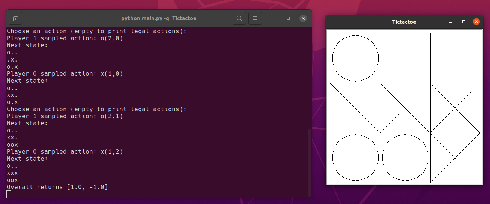
import turtle
import sys, os
sys.path.append(os.path.dirname(os.path.realpath(__file__)))
from Game import Game
class Tictactoe(Game):
def __init__(self, type='mouse', simulations=1000) -> None:
self._state = {'player': 0}
self.players = [self.drawx, self.drawo]
self.arr = [[0 for i in range(3)] for j in range(3)]
turtle.setup(420, 420)
turtle.title('Tictactoe')
turtle.hideturtle()
turtle.tracer(False)
self.grid()
super().__init__('tic_tac_toe', self.show, type, simulations)
if type == 'mouse':
turtle.onscreenclick(self.tap)
else:
while not self.state.is_terminal():
self.play_game()
turtle.done()
def line(self, a, b, x, y):
turtle.up()
turtle.goto(a, b)
turtle.down()
turtle.goto(x, y)
def grid(self):
self.line(-67, 200, -67, -200)
self.line(67, 200, 67, -200)
self.line(-200, -67, 200, -67)
self.line(-200, 67, 200, 67)
turtle.update()
def drawx(self, x, y):
self.line(x, y, x + 133, y + 133)
self.line(x, y + 133, x + 133, y)
turtle.update()
def drawo(self, x, y):
turtle.up()
turtle.goto(x + 67, y + 5)
turtle.down()
turtle.circle(62)
turtle.update()
def floor(self, value):
return ((value + 200) // 133) * 133 - 200
def draw(self, x, y):
"""Draw X or O in tapped square."""
x = self.floor(x)
y = self.floor(y)
player = self._state['player']
draw = self.players[player]
draw(x, y)
turtle.update()
self._state['player'] = not player
def show(self, str):
self.arr = [[0 for i in range(3)] for j in range(3)]
str = str[:]
turtle.clear()
self.grid()
for i in range(3):
for j in range(3):
if(str[i*4+j] != '.'):
self.arr[i][j] = 1
self._state['player'] = 0 if str[i*4+j] == 'x' else 1
self.draw(-133+j*133, 133-i*133)
def tap(self, x, y):
x = int((x + 200) // 133)
y = int(2 - (y + 200) // 133)
position = str(x + y*3)
if self.arr[y][x] == 1:
return
for i in range(2):
self.play_game(position)
if __name__ == "__main__":
Tictactoe()Go
围棋使用矩形格状棋盘及黑白二色圆形棋子进行对弈，正规棋盘上有纵横各19条线段，361个交叉点，棋子必须走在空格非禁着点的交叉点上，双方交替行棋，落子后不能移动或悔棋，以目数多者为胜。
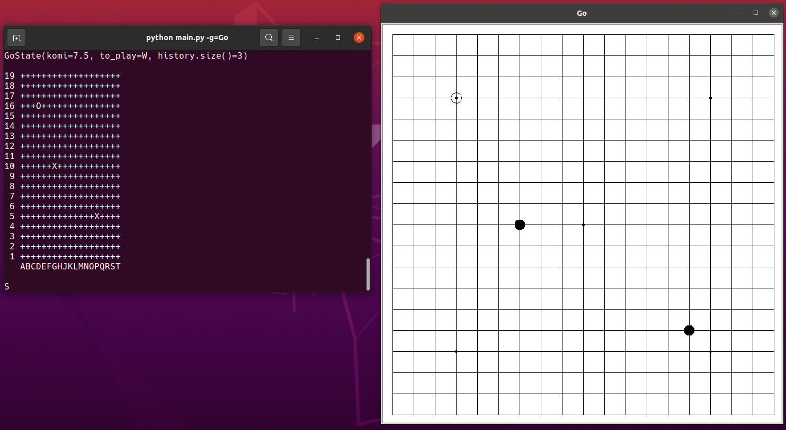
import turtle
import sys, os
sys.path.append(os.path.dirname(os.path.realpath(__file__)))
from Game import Game
class Go(Game):
def __init__(self, type='mouse', simulations=1000) -> None:
self._state = {'player': 0}
self.players = [self.draw_black, self.draw_white]
self.arr = [[0 for i in range(19)] for j in range(19)]
turtle.setup(760, 760)
turtle.title('Go')
turtle.hideturtle()
turtle.tracer(False)
self.grid()
super().__init__('go', self.show, type, simulations)
if type == 'mouse':
turtle.onscreenclick(self.tap)
else:
while not self.state.is_terminal():
self.play_game()
turtle.done()
def grid(self):
turtle.home()
for i in range(19): # 画横向
turtle.up()
turtle.goto(-360, -360+i*40)
turtle.down()
turtle.fd(720)
turtle.left(90)
for i in range(19): # 画竖向
turtle.up()
turtle.goto(-360+i*40, -360)
turtle.down()
turtle.fd(720)
turtle.up() # 画标点
turtle.goto(0, 0)
turtle.dot()
turtle.goto(240, 240)
turtle.dot()
turtle.goto(-240, 240)
turtle.dot()
turtle.goto(240, -240)
turtle.dot()
turtle.goto(-240, -240)
turtle.dot()
turtle.update()
def draw_black(self, x, y):
turtle.goto(x, y)
turtle.dot(20)
def draw_white(self, x, y):
turtle.goto(x+10, y)
turtle.down()
turtle.circle(10)
turtle.up()
def floor(self, value):
return int(((value + 360) / 40) + 0.5) * 40 - 360
def draw(self, x, y):
x = self.floor(x)
y = self.floor(y)
player = self._state['player']
draw = self.players[player]
draw(x, y)
turtle.update()
self._state['player'] = not player
def show(self, str):
self.arr = [[0 for i in range(19)] for j in range(19)]
str = str.split('\n')[2:21]
turtle.clear()
self.grid()
i = 0
for substr in str:
j = 0
for ch in substr:
if ch == '+':
j += 1
elif ch == 'X':
self.arr[i][j] = 1
self._state['player'] = 0
self.draw(-360+j*40, 360-i*40)
j += 1
elif(ch == 'O'):
self.arr[i][j] = 1
self._state['player'] = 1
self.draw(-360+j*40, 360-i*40)
j += 1
i += 1
def tap(self, x, y):
x = int(((x + 360) / 40) + 0.5)
y = int(((y + 360) / 40) + 0.5)
position = str(x + y*19)
if self.arr[18 - y][x] == 1:
return
for i in range(2):
self.play_game(position)
if __name__ == "__main__":
Go()Y
规则如下：
- 玩家轮流在棋盘上放置一颗他们颜色的棋子。
- 一旦玩家连接了棋盘的所有三个面，游戏就结束并且该玩家获胜。角点属于它们相邻的板的两侧。
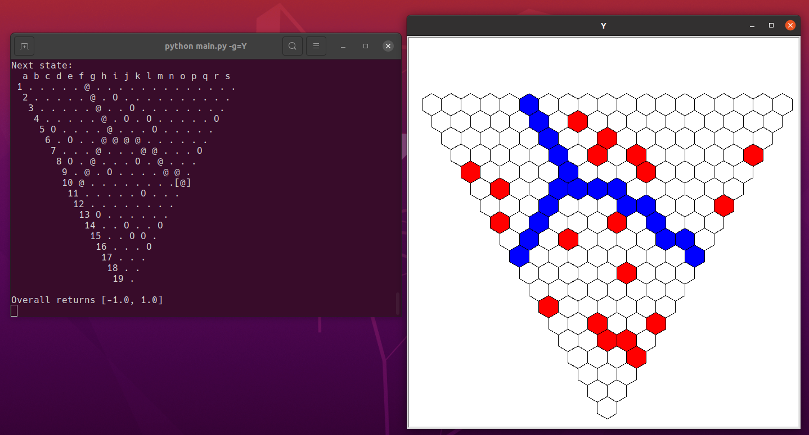
import turtle
import sys, os
sys.path.append(os.path.dirname(os.path.realpath(__file__)))
from Game import Game
class Y(Game):
def __init__(self, type='mouse', simulations=1000) -> None:
self._state = {'player': 0}
self.players = [self.draw_black, self.draw_white]
self.arr = [[0 for i in range(19)] for j in range(19)]
turtle.setup(700, 700)
turtle.title('Y')
turtle.hideturtle()
turtle.tracer(False)
self.grid()
super().__init__('y', self.show, type, simulations)
if type == 'mouse':
turtle.onscreenclick(self.tap)
else:
while not self.state.is_terminal():
self.play_game()
turtle.done()
def hexagon(self, x, y):
turtle.penup()
turtle.goto(x, y-20)
turtle.pendown()
turtle.circle(20, steps=6)
def grid(self):
for i in range(20):
for j in range(i):
self.hexagon(350+20/2*(3**0.5)*(j-2*i), 230-30*j)
turtle.update()
def draw_black(self, x, y):
turtle.fillcolor('red')
turtle.begin_fill()
self.hexagon(x, y)
turtle.end_fill()
turtle.update()
def draw_white(self, x, y):
turtle.fillcolor('blue')
turtle.begin_fill()
self.hexagon(x, y)
turtle.end_fill()
turtle.update()
def draw(self, x, y):
player = self._state['player']
draw = self.players[player]
draw(x, y)
self._state['player'] = not player
def show(self, str):
self.arr = [[0 for i in range(19)] for j in range(19)]
str = str.split('\n')[1:20]
turtle.clear()
self.grid()
i = 0
for substr in str:
j = 0
for ch in substr:
if ch == '.':
j += 1
elif ch == 'O':
self.arr[i][j] = 1
self._state['player'] = 0
self.draw(350+20/2*(3**0.5)*(i-2*(19-j)), 230-30*i)
j += 1
elif ch == '@':
self.arr[i][j] = 1
self._state['player'] = 1
self.draw(350+20/2*(3**0.5)*(i-2*(19-j)), 230-30*i)
j += 1
i += 1
def tap(self, x, y):
for i in range(20):
for j in range(i):
X = 350+20/2*(3**0.5)*(j-2*i)
Y = 230-30*j
if x >= X - 20 and x <= X + 20 and y >= Y - 20 and y <= Y + 20:
if x >= X - 20 and x <= X:
if y > Y - 10 - 10 * (x - (X-20))/(10*(3**0.5)) and y < Y + 10 + 10 * (x - (X-20))/(10*(3**0.5)):
if self.arr[j][19-i] == 1:
return
position = str(19*j+19-i)
for i in range(2):
self.play_game(position)
return
elif x >= X and x <= X + 20:
if y > Y - 10 - 10 * ((X+20) - x)/(10*(3**0.5)) and y < Y + 10 + 10 * ((X+20) - x)/(10*(3**0.5)):
if self.arr[j][19-i] == 1:
return
position = str(19*j+19-i)
for i in range(2):
self.play_game(position)
return
if __name__ == "__main__":
Y()Hex
它传统上在 11×11菱形板上进行。每个玩家都被分配了一对相对的棋盘面，他们必须轮流将一块与他们颜色相同的棋子放在任何空白处，以尝试将它们连接起来。一旦放置，石头就无法移动或移除。当玩家通过一连串相邻的棋子成功地将相对的棋盘面连接在一起时获胜。由于游戏板的拓扑结构，在 Hex 中无法进行平局。
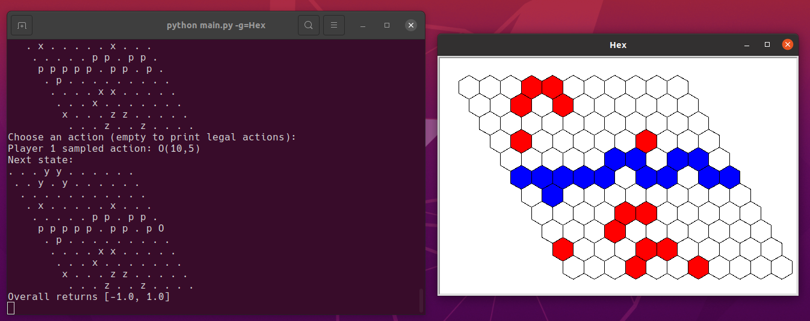
import turtle
import sys, os
sys.path.append(os.path.dirname(os.path.realpath(__file__)))
from Game import Game
class Hex(Game):
def __init__(self, type='mouse', simulations=1000) -> None:
self._state = {'player': 0}
self.players = [self.draw_black, self.draw_white]
self.arr = [[0 for i in range(11)] for j in range(11)]
turtle.setup(600, 400)
turtle.title('Hex')
turtle.hideturtle()
turtle.tracer(False)
self.grid()
super().__init__('hex', self.show, type, simulations)
if type == 'mouse':
turtle.onscreenclick(self.tap)
else:
while not self.state.is_terminal():
self.play_game()
turtle.done()
def hexagon(self, x, y):
turtle.penup()
turtle.goto(x, y-20)
turtle.pendown()
turtle.circle(20, steps=6)
def grid(self):
for i in range(11):
for j in range(11):
self.hexagon(-250+20/2*(3**0.5)*(2*j+i), 150-30*i)
turtle.update()
def draw_black(self, x, y):
turtle.fillcolor('red')
turtle.begin_fill()
self.hexagon(x, y)
turtle.end_fill()
turtle.update()
def draw_white(self, x, y):
turtle.fillcolor('blue')
turtle.begin_fill()
self.hexagon(x, y)
turtle.end_fill()
turtle.update()
def draw(self, x, y):
player = self._state['player']
draw = self.players[player]
draw(x, y)
self._state['player'] = not player
def show(self, str):
self.arr = [[0 for i in range(11)] for j in range(11)]
str = str.split('\n')
turtle.clear()
self.grid()
i = 0
for substr in str:
j = 0
for ch in substr:
if ch == '.':
j += 1
elif ch == 'x' or ch == 'y' or ch == 'z' or ch == 'X':
self.arr[i][j] = 1
self._state['player'] = 0
self.draw(-250+20/2*(3**0.5)*(2*j+i), 150-30*i)
j += 1
elif ch == 'o' or ch == 'p' or ch == 'q' or ch == 'O':
self.arr[i][j] = 1
self._state['player'] = 1
self.draw(-250+20/2*(3**0.5)*(2*j+i), 150-30*i)
j += 1
i += 1
def tap(self, x, y):
for i in range(11):
for j in range(11):
X = -250+20/2*(3**0.5)*(2*j+i)
Y = 150-30*i
if x >= X - 20 and x <= X + 20 and y >= Y - 20 and y <= Y + 20:
if x >= X - 20 and x <= X:
if y > Y - 10 - 10 * (x - (X-20))/(10*(3**0.5)) and y < Y + 10 + 10 * (x - (X-20))/(10*(3**0.5)):
if self.arr[i][j] == 1:
return
position = str(i*11+j)
for i in range(2):
self.play_game(position)
return
elif x >= X and x <= X + 20:
if y > Y - 10 - 10 * ((X+20) - x)/(10*(3**0.5)) and y < Y + 10 + 10 * ((X+20) - x)/(10*(3**0.5)):
if self.arr[i][j] == 1:
return
position = str(i*11+j)
for i in range(2):
self.play_game(position)
return
if __name__ == "__main__":
Hex()Havannah
规则如下：
- 每位玩家每回合将一颗与其颜色相同的棋子放在棋盘上。
- 棋子永远不会被移动、捕获或以其他方式改变。
- 当玩家完成三个不同结构中的一个时获胜：
- 环，围绕一个或多个单元格的循环（无论被包围的单元格是否被任何玩家占据或空）；
- 桥，连接棋盘六个角点中的任意两个；
- 叉子，连接棋盘的任意三个边缘；角点不被视为边缘的一部分。
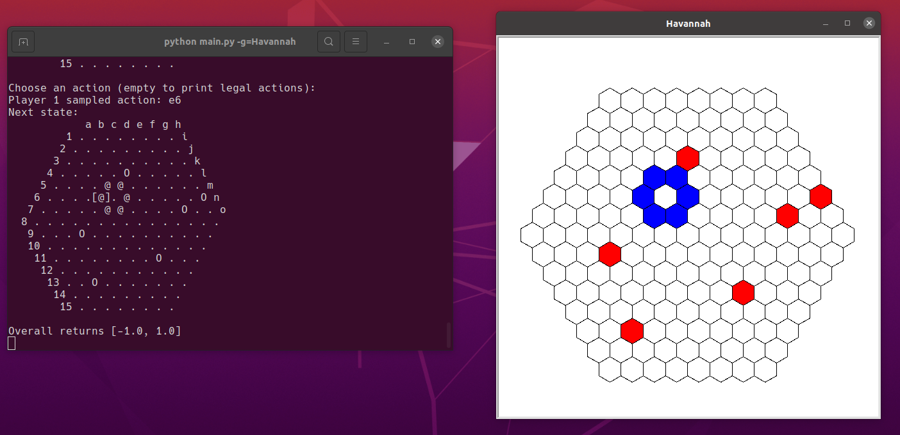
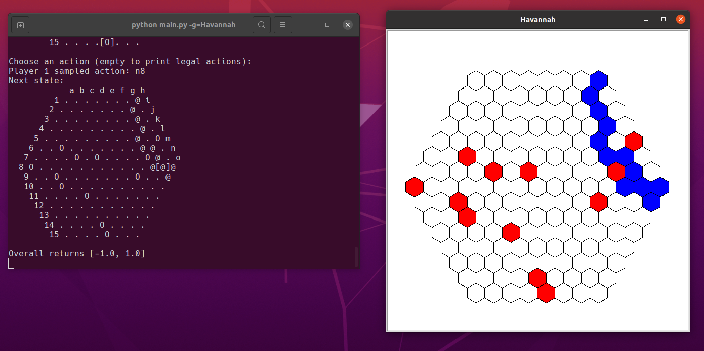
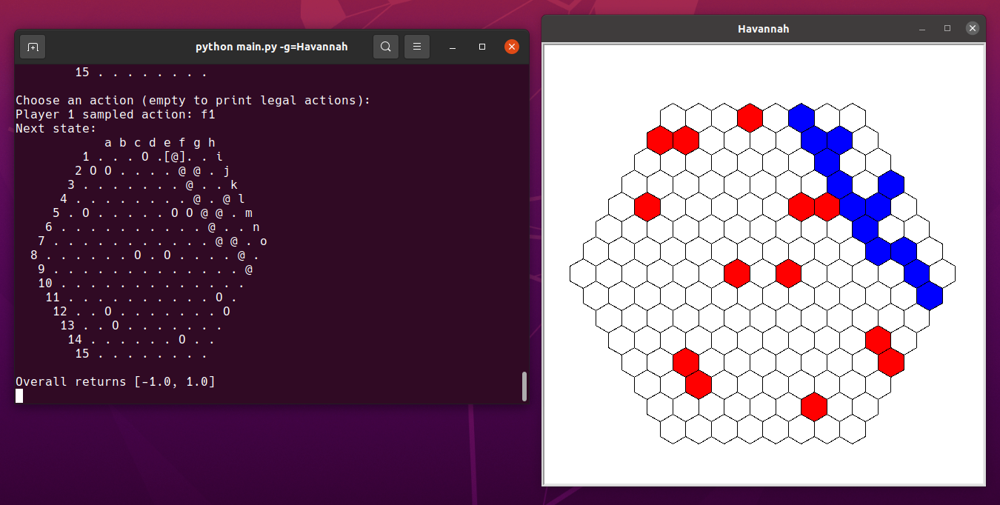
import turtle
import sys, os
sys.path.append(os.path.dirname(os.path.realpath(__file__)))
from Game import Game
class Havannah(Game):
def __init__(self, type='mouse', simulations=1000) -> None:
self._state = {'player': 0}
self.players = [self.draw_black, self.draw_white]
self.arr = [[0 for i in range(15)] for j in range(15)]
turtle.setup(600, 600)
turtle.title('Havannah')
turtle.hideturtle()
turtle.tracer(False)
self.grid()
super().__init__('havannah', self.show, type, simulations)
if type == 'mouse':
turtle.onscreenclick(self.tap)
else:
while not self.state.is_terminal():
self.play_game()
turtle.done()
def hexagon(self, x, y):
turtle.penup()
turtle.goto(x, y-20)
turtle.pendown()
turtle.circle(20, steps=6)
def grid(self):
for i in range(15):
for j in range(15):
if (i <= 7 and j <= 7 + i) or (i >= 8 and j >= i - 7):
self.hexagon(-125+20/2*(3**0.5)*(2*j-i), 200-30*i)
turtle.update()
def draw_black(self, x, y):
turtle.fillcolor('red')
turtle.begin_fill()
self.hexagon(x, y)
turtle.end_fill()
turtle.update()
def draw_white(self, x, y):
turtle.fillcolor('blue')
turtle.begin_fill()
self.hexagon(x, y)
turtle.end_fill()
turtle.update()
def draw(self, x, y):
player = self._state['player']
draw = self.players[player]
draw(x, y)
self._state['player'] = not player
def show(self, str):
self.arr = [[0 for i in range(15)] for j in range(15)]
str = str.split('\n')[1:16]
turtle.clear()
self.grid()
i = 0
for substr in str:
j = 0 if i <= 7 else (i - 7)
for ch in substr:
if ch == '.':
j += 1
elif ch == 'O':
self.arr[i][j] = 1
self._state['player'] = 0
self.draw(-125+20/2*(3**0.5)*(2*j-i), 200-30*i)
j += 1
elif(ch == '@'):
self.arr[i][j] = 1
self._state['player'] = 1
self.draw(-125+20/2*(3**0.5)*(2*j-i), 200-30*i)
j += 1
i += 1
def tap(self, x, y):
for i in range(15):
for j in range(15):
if (i <= 7 and j <= 7 + i) or (i >= 8 and j >= i - 7):
X = -125+20/2*(3**0.5)*(2*j-i)
Y = 200-30*i
if x >= X - 20 and x <= X + 20 and y >= Y - 20 and y <= Y + 20:
if x >= X - 20 and x <= X:
if y > Y - 10 - 10 * (x - (X-20))/(10*(3**0.5)) and y < Y + 10 + 10 * (x - (X-20))/(10*(3**0.5)):
if self.arr[i][j] == 1:
return
position = str(i*15+j)
for i in range(2):
self.play_game(position)
return
elif x >= X and x <= X + 20:
if y > Y - 10 - 10 * ((X+20) - x)/(10*(3**0.5)) and y < Y + 10 + 10 * ((X+20) - x)/(10*(3**0.5)):
if self.arr[i][j] == 1:
return
position = str(i*15+j)
for i in range(2):
self.play_game(position)
return
if __name__ == "__main__":
Havannah()Free Python Games
项目对原 Free Python Games 中大部分的游戏进行了升级处理，并对Free Python Games中的paint与snake进行拓展
paint
该程序通过键盘来控制颜色、形状、是否填充：K、W、G、B、R分别代表颜色黑、白、绿、蓝、红；l、s、c、r、t分别代表形状线段、正方形、圆、长方形、三角形；f代表所化封闭图形需要填充；F则代表不用填充。
圆形、长方形、三角形与填充选项为拓展。
圆形：通过图上鼠标点击的两点得到半径，第二个点为圆心而得到目标的图形。
长方形：通过图上鼠标点击的两点得到目标图形的对角的两个点，进行绘制。
三角形：通过图上鼠标点击的三个点得到目标图形的三个顶点。
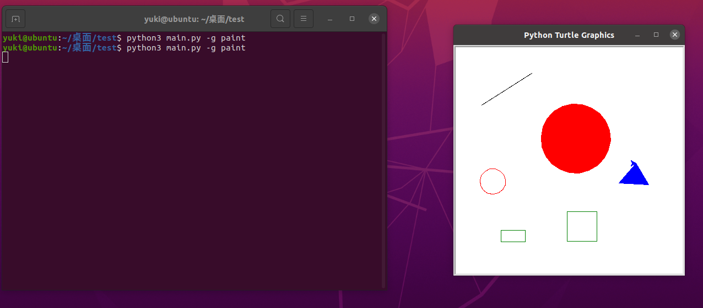
import turtle
import math
from freegames import vector
def line(start, middle, end):
"""Draw line from start to end."""
turtle.goto(end.x, end.y)
def square(start, middle, end):
"""Draw square from start to end."""
for count in range(4):
turtle.forward(end.x - start.x)
turtle.left(90)
def circle(start, middle, end):
"""Draw circle from start to end."""
r = ((end.x - start.x)**2 + (end.y - start.y)**2)**0.5
angle = math.atan2(end.x - start.x, end.y - start.y)
angle = int(angle * 180/math.pi)
turtle.right(angle)
turtle.circle(r)
turtle.left(angle)
pass # TODO
def rectangle(start, middle, end):
"""Draw rectangle from start to end."""
turtle.forward(end.x - start.x)
turtle.left(90)
turtle.forward(end.y - start.y)
turtle.left(90)
turtle.forward(end.x - start.x)
turtle.left(90)
turtle.forward(end.y - start.y)
turtle.left(90)
pass # TODO
def triangle(start, middle, end):
"""Draw triangle from start to end."""
turtle.goto(middle.x, middle.y)
turtle.goto(end.x, end.y)
turtle.goto(start.x, start.y)
pass # TODO
def tap(x, y):
"""Store starting point or draw shape."""
start = state['start']
middle = state['middle']
shape = state['shape']
if state['shape'] != triangle:
if start is None:
state['start'] = vector(x, y)
else:
shape = state['shape']
end = vector(x, y)
draw_shape(start, middle, end)
state['start'] = None
else:
if start is None:
state['start'] = vector(x, y)
elif middle is None:
state['middle'] = vector(x, y)
else:
shape = state['shape']
end = vector(x, y)
draw_shape(start, middle, end)
state['start'] = None
state['middle'] = None
def draw_shape(start, middle, end):
turtle.up()
turtle.goto(start.x, start.y)
turtle.down()
shape = state['shape']
if state['fill'] == 'yes':
turtle.begin_fill()
shape(start, middle, end)
if state['fill'] == 'yes':
turtle.end_fill()
def store(key, value):
"""Store value in state at key."""
state[key] = value
def main():
#state = {'start': None, 'middle': None, 'shape': line, 'fill': 'no'}
turtle.setup(420, 420, 370, 0)
turtle.onscreenclick(tap)
turtle.listen()
turtle.onkey(turtle.undo, 'u')
turtle.onkey(lambda: turtle.color('black'), 'K')
turtle.onkey(lambda: turtle.color('white'), 'W')
turtle.onkey(lambda: turtle.color('green'), 'G')
turtle.onkey(lambda: turtle.color('blue'), 'B')
turtle.onkey(lambda: turtle.color('red'), 'R')
turtle.onkey(lambda: store('shape', line), 'l')
turtle.onkey(lambda: store('shape', square), 's')
turtle.onkey(lambda: store('shape', circle), 'c')
turtle.onkey(lambda: store('shape', rectangle), 'r')
turtle.onkey(lambda: store('shape', triangle), 't')
turtle.onkey(lambda: store('fill', 'yes'), 'f')
turtle.onkey(lambda: store('fill', 'no'), 'F')
turtle.done()
state = {'start': None, 'middle': None, 'shape': line, 'fill': 'no'}
if __name__ == '__main__':
main()snake
该游戏为贪吃蛇，基于源程序拓展了以下功能：
- 当蛇头碰到一边的边界后会从另一个边界出来，即蛇不会因碰到边界而游戏失败。
- 蛇只可以转向它前进方向的左边和右边，即按动与前进方向相反的方向键后，蛇不会死亡且不改变移动方向。
- 蛇在死亡后可以按’r’键原地复活，但身体长度回到初始；按’q’，直接退出游戏。
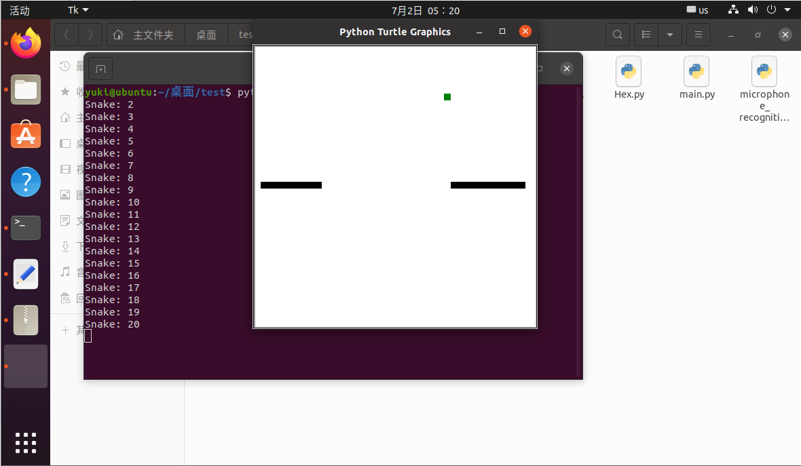
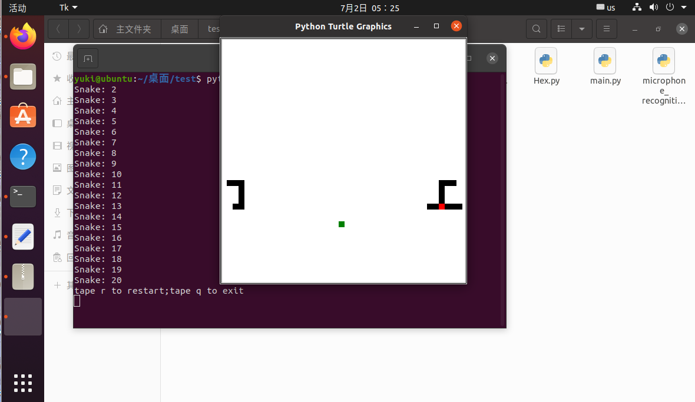
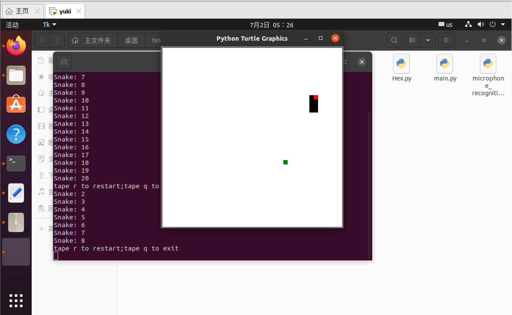
from random import randrange
from turtle import *
import sys
from freegames import square, vector
food = vector(0, 0)
snake = [vector(10, 0)]
aim = vector(0, -10)
turnning = 0
def change(x, y):
"""Change snake direction."""
global turnning
if turnning == 1:
return
turnning = 1
if x != 0 and aim.x != 0 and x + aim.x == 0:
turnning = 0
return
elif y != 0 and aim.y != 0 and y + aim.y == 0:
turnning = 0
return
aim.x = x
aim.y = y
turnning = 0
def inside(head):
"""Return True if head inside boundaries."""
if head.x <= -200:
head.x = 190
elif head.x >= 190:
head.x = -200
elif head.y <= -200:
head.y = 190
elif head.y >= 190:
head.y = -200
return -200 <= head.x <= 190 and -200 <= head.y <= 190
def direction(key):
if aim.x != -10 and key == 'Right':
change(10, 0)
if aim.x != 10 and key == 'Left':
change(-10, 0)
if aim.y != -10 and key == 'Up':
change(0, 10)
if aim.y != 10 and key == 'Down':
change(0, -10)
def move():
"""Move snake forward one segment."""
head = snake[-1].copy()
head.move(aim)
if not inside(head) or head in snake:
square(head.x, head.y, 9, 'red')
update()
ontimer(restart(), 150)
return
snake.append(head)
if head == food:
print('Snake:', len(snake))
food.x = randrange(-15, 15) * 10
food.y = randrange(-15, 15) * 10
else:
snake.pop(0)
clear()
for body in snake:
square(body.x, body.y, 9, 'black')
square(food.x, food.y, 9, 'green')
update()
ontimer(move, 100)
def restart():
print('tape r to restart;tape q to exit')
listen()
onkey(main, 'r')
onkey(exit, 'q')
def exit():
sys.exit()
def main():
global turnning
turnnong = 0
setup(420, 420, 370, 0)
if len(snake) > 1:
for body in range(len(snake) -1):
snake.pop(0)
reset()
hideturtle()
tracer(False)
listen()
onkey(lambda: change(10, 0), 'Right')
onkey(lambda: change(-10, 0), 'Left')
onkey(lambda: change(0, 10), 'Up')
onkey(lambda: change(0, -10), 'Down')
move()
done()
if __name__ == '__main__':
main()总结与展望
本项目实现了一个统一的接口封装图形化界面、ai与语音识别，在避免复杂逻辑的情况下减少三者的耦合，从而使得项目易于学习与拓展。项目中作为例子实现了open_spiel的蒙特卡罗算法调用，Tictactoe, Go, Y, Hex, Havannah五个双人策略游戏，对Free Python Games中的paint与snake进行拓展，对原 Free Python Games 中大部分的游戏进行了升级处理，基于线下Vosk的语音识别。未来基于现有的接口可以方便的引入其它的强化学习、搜索、最优化、估值算法，补充支持的游戏，增加语音识别api。项目在Windows11和 Ubuntu 20.04.4 LTS 上测试通过，具有较高的可扩展性与可移植性。